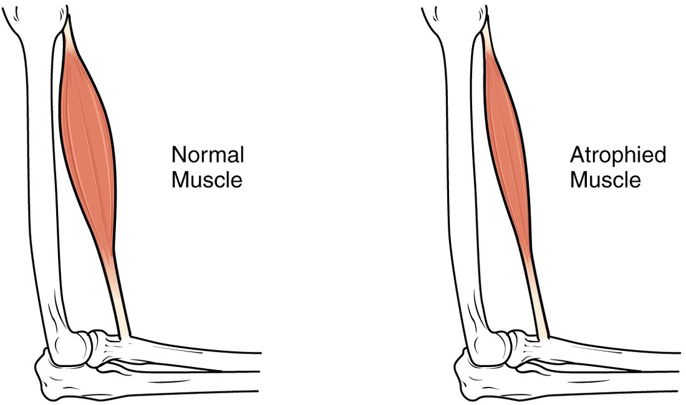

Why can one runner hold a steady pace for 42 kilometers while another explodes over 100 meters but fades after 200? A large part of the answer is inside their muscle fibers. This page compares slow-twitch vs fast-twitch muscle fibers (slow oxidative, fast oxidative and fast glycolytic), explains how training changes them through hypertrophy and new capillary growth, how disuse and age shrink them, and how muscle repairs itself or fails to, as in muscular dystrophy.
Two questions that sort muscle fibers
Every skeletal muscle fiber works the same way: action potential, calcium, cross-bridges. But fibers differ in two properties, and those two properties sort them into types.
- How fast does it contract? This depends mainly on which version of myosin the fiber makes. Fast myosin splits ATP several times faster than slow myosin, so its cross-bridges cycle faster. Fast fibers also pump calcium back into the SR faster, so their twitches end sooner. A slow fiber's twitch can last 100 ms or more; a fast fiber's can be over in a third of that.
- How does it mainly make ATP? An oxidative fiber relies on aerobic respiration in muscle: it is packed with mitochondria and myoglobin and surrounded by many capillaries. A glycolytic fiber relies on anaerobic glycolysis in muscle: it has few mitochondria and little myoglobin, but large glycogen stores and plenty of glycolytic enzymes.
The three skeletal muscle fiber types
Combining the two answers gives the three skeletal muscle fiber types:
- Slow oxidative (SO) fibers, also called slow-twitch or type I fibers: slow myosin, oxidative metabolism.
- Fast oxidative (FO) fibers, also called type IIa fibers: fast myosin, mainly oxidative metabolism with a good glycolytic capacity too.
- Fast glycolytic (FG) fibers, also called type IIx fibers: fast myosin, mainly glycolytic metabolism.
FO and FG fibers together are the fast-twitch fibers.
| Slow oxidative (type I) | Fast oxidative (type IIa) | Fast glycolytic (type IIx) | |
|---|---|---|---|
| Speed of contraction | Slow | Fast | Fast |
| Myosin's rate of splitting ATP | Slow | Fast | Fast |
| Main way of making ATP | Aerobic respiration | Aerobic respiration, with good glycolytic capacity | Anaerobic glycolysis |
| Mitochondria | Many | Many | Few |
| Myoglobin and color | High; red | High; red to pink | Low; pale ("white") |
| Capillaries around each fiber | Many | Many | Few |
| Glycogen stores | Low | Intermediate | High |
| Fiber diameter | Small | Intermediate | Large |
| Force and power | Low | Intermediate | High |
| Resistance to fatigue | High: can work for hours | Fairly high | Low: fatigues within a minute or two |
| Size of motor unit | Small; recruited first | Intermediate | Large; recruited last |
| Typical use | Posture, walking, distance running | Brisk running, middle-distance events | Jumping, throwing, lifting a heavy load, sprinting |
Each row follows from the two basic properties. A fiber that makes its ATP aerobically needs a steady oxygen supply: hence the mitochondria, myoglobin and capillaries, and hence the red color. It also needs a short distance for oxygen to diffuse, which is one reason oxidative fibers are thin. A glycolytic fiber does not wait for oxygen, so it can be thick and pack in many myofibrils, which gives it great force, but its glycogen runs down and phosphate builds up quickly, so it tires fast.
Muscles are mixtures
No human muscle is made of one fiber type. Each muscle holds a mixture, and the proportions follow what the muscle does:
- A deep calf muscle that keeps you from pitching forward as you stand is often 70 to 80 percent slow oxidative fibers.
- The muscles that move your eyes are mostly fast fibers.
- The large muscle on the front of your thigh is, in an average untrained person, roughly half slow and half fast.
All the fibers in one motor unit are the same type, because the motor neuron's pattern of activity helps set which myosin the fibers make. Slow oxidative fibers belong to the small motor units, and fast glycolytic fibers to the largest ones. By the size principle you met in the last topics, this means that everyday, low-force activity uses mainly fatigue-resistant slow oxidative fibers. Fast glycolytic fibers join in only when you need near-maximal force.
Worked example: reading a muscle biopsy
Problem. A needle biopsy from a runner's thigh muscle is stained to show fiber types. In one field, a technician counts 138 slow oxidative, 46 fast oxidative and 16 fast glycolytic fibers. What percentage of the fibers are slow-twitch, and what kind of event does this runner most likely do?
- Total fibers. 138 + 46 + 16 = 200.
- Slow-twitch fibers. Only slow oxidative fibers are slow-twitch: 138.
- Percentage. 138 ÷ 200 = 0.69, or 69 percent.
- Fast-twitch. 46 + 16 = 62, or 31 percent.
- Interpret. An untrained thigh muscle is about half slow and half fast. At 69 percent slow, this runner's muscle favors endurance.
Answer. 69 percent slow-twitch; most likely a distance runner. Elite marathon runners' leg muscles are often 70 to 80 percent slow-twitch, and elite sprinters' are often 70 to 80 percent fast-twitch.
How much of that difference comes from training and how much from inheritance? Both. The proportion of slow to fast fibers is strongly inherited and changes little with training in adults. Training changes what each fiber is like, as the next sections show.
Endurance training and angiogenesis
A person who starts running 30 minutes a day, five days a week, can run noticeably farther within two months. Their muscles have not grown much. Their fibers have become better at aerobic respiration:
- More mitochondria in each fiber, with more of the enzymes of aerobic respiration.
- More myoglobin.
- More capillaries around each fiber.
- A shift among the fast fibers: fast glycolytic fibers take on the properties of fast oxidative ones. Conversion between slow and fast types is small in adults.
The new capillaries come from angiogenesis (angi/o = vessel, -genesis = formation): the growth of new capillaries by sprouting from existing ones. In working muscle it happens like this:
- During each training session, working fibers are low in oxygen and the capillaries are stretched and sheared by fast blood flow.
- These signals make muscle fibers and capillary lining cells release growth factors, above all vascular endothelial growth factor (VEGF).
- VEGF binds receptor proteins on the endothelium of nearby capillaries. Those endothelial cells divide and migrate outward, forming a sprout.
- The sprout hollows out and joins another capillary, and blood starts to flow through it.
With more capillaries, each fiber's mitochondria are closer to a blood supply. The diffusion distance for oxygen shortens, and more oxygen reaches each fiber per minute. The same process heals wounds and builds new vessels in the lining of the uterus each month. Tumors also trigger it to feed their growth, and some cancer drugs work by blocking VEGF.
Resistance training and hypertrophy
Lift heavy weights three times a week, and over months your muscles grow. Hypertrophy (hyper- = over, troph- = nourishment, growth) is the growth of a tissue by enlargement of its existing cells. In skeletal muscle, the number of fibers stays about the same; each fiber gets thicker:
- Heavy loads, especially with eccentric contractions, stimulate fibers to make more actin, myosin and other proteins.
- New myofibrils are added side by side, so each fiber's diameter grows. Fast fibers grow the most.
- A bigger fiber needs more nuclei to make all that protein. Muscle stem cells beside each fiber divide and fuse with it, adding their nuclei.
- Fast glycolytic fibers again shift toward fast oxidative ones.
Strength rises faster than muscle size at first. In the first few weeks of training, the nervous system learns to recruit more motor units and to fire them together, before much new protein is added.
Hyperplasia (-plasia = formation) is growth by an increase in the number of cells. Smooth muscle can grow this way as well as by hypertrophy: in pregnancy, the uterus's smooth muscle fibers mostly enlarge, but some also divide. In adult human skeletal muscle, hyperplasia adds few if any fibers; almost all growth is hypertrophy.
Atrophy
Take a cast off a leg after six weeks and the calf is visibly thinner (Figure 1). Atrophy (a- = without, troph- = nourishment) is the shrinking of a tissue as its cells lose size. In skeletal muscle, fibers lose myofibrils, because protein is broken down faster than it is made.

Muscle atrophies whenever it is used much less than usual:
- Disuse: a cast, bed rest or spaceflight. Leg muscles can lose a noticeable amount of their mass within two weeks of bed rest, and strength falls faster still.
- Loss of the motor neuron: if the motor neuron dies or its axon is cut, its fibers receive no action potentials at all. They atrophy severely, and unless the axon regrows, over months to years they are replaced by fat and connective tissue.
- Long fasting and serious illness, when the body breaks down muscle protein for fuel.
Disuse atrophy is reversible: once the muscle is used again, fibers rebuild their myofibrils. That is why hospital patients are gotten out of bed as early as possible.
How skeletal muscle forms and repairs itself
You met the many nuclei of a skeletal muscle fiber in the tissues chapter. They come from how the fiber forms:
- In the embryo, muscle stem cells become myoblasts (my/o = muscle, -blast = immature, forming cell): dividing, spindle-shaped cells committed to becoming muscle.
- Myoblasts line up and fuse end to end into a myotube (a long, young multinucleated fiber), which starts to make actin and myosin.
- The myotube fills with myofibrils, its nuclei move to the edge, and it becomes a mature fiber.
Mature fibers never divide. A small population of muscle stem cells stays behind in the adult, tucked between each fiber's sarcolemma and its basal lamina. They sit on the surface of the fiber like satellites, each one ready to rebuild it. When a fiber is injured:
- The stem cells wake up and divide.
- Their daughters become myoblasts; some return to rest, keeping the stem cell supply.
- The myoblasts fuse with the damaged fiber, patching it and adding nuclei, or fuse with each other into new myotubes that mature into new fibers.
Repair works well for small injuries such as a strain or next-day soreness. After a large injury, with much tissue lost, the gap fills with scar tissue from fibroblasts instead.
Aging and sarcopenia
Mr. Alvarez, 78, used to rise from his armchair without thinking. Now he pushes up with both arms. Sarcopenia (sarc/o = flesh, -penia = deficiency) is the age-related loss of skeletal muscle mass, strength and function. From about age 50, adults lose roughly 1 percent of their muscle mass each year, and strength falls faster.
Several causes combine:
- Loss of motor neurons. As motor neurons die, their fibers are orphaned. Neighboring motor neurons sprout new branches and adopt some of them, so the surviving motor units are fewer but larger, and fine control suffers. Fibers not adopted atrophy.
- Fast fibers shrink most, so power, the ability to produce force quickly, drops even more than strength. Catching yourself when you trip depends on power.
- Fewer and less active muscle stem cells, so repair is slower.
- Less activity and less protein in the diet, which feed the loss.
Sarcopenia raises the risk of falls, fractures and losing independence. It is not simply inevitable: resistance training builds muscle and strength at any age, even in people in their 90s.
Muscular dystrophy
Muscular dystrophy (dys- = bad, troph- = nourishment) is a group of inherited diseases in which muscle fibers progressively degenerate and are replaced by fat and connective tissue. The most common severe form in children is Duchenne muscular dystrophy:
- A mutation in the gene for the protein dystrophin, on the X chromosome, leaves the fibers without working dystrophin. Because boys have one X chromosome, it mainly affects boys, about 1 in 3,500 to 5,000.
- Dystrophin normally anchors the fiber's myofibrils, through its cytoskeleton, to the sarcolemma and the connective tissue outside it. Without it, each contraction tears the sarcolemma.
- Calcium leaks into the torn fibers, and they die. Enzymes such as creatine kinase leak out into the blood, where very high levels help the diagnosis.
- The muscle stem cells rebuild fibers at first, but the new fibers are just as fragile. Over years, repair falls behind and fat and scar tissue take over.
Weakness shows by age 3 to 5: a boy climbs up his own legs with his hands to stand up. The calves look large, but the bulk is fat and connective tissue, not muscle. Over time the breathing muscles and the heart are affected. Steroid drugs, breathing support and newer gene-targeted treatments have extended life expectancy into the 30s and beyond.
Putting it together
Muscle fibers differ in contraction speed, set by their myosin, and in how they make ATP. Slow oxidative fibers are thin, red and tireless; fast glycolytic fibers are thick, pale, powerful and quick to tire; fast oxidative fibers sit between. Each muscle mixes them, and the size principle recruits slow fibers first. Endurance training adds mitochondria, myoglobin and capillaries by angiogenesis; resistance training causes hypertrophy of existing fibers. Disuse, lost nerve supply and aging cause atrophy and sarcopenia. Muscle stem cells, working through myoblasts and myotubes, repair small injuries, and their failure to keep up shapes muscular dystrophy.